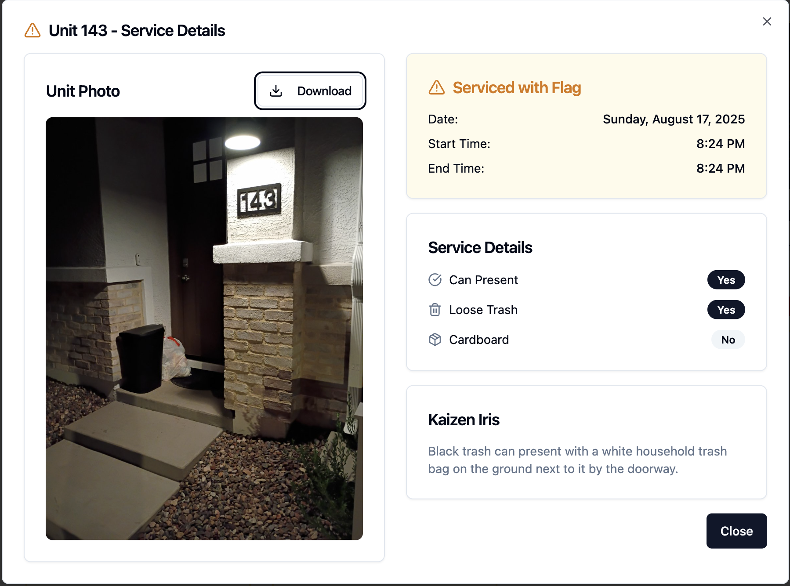
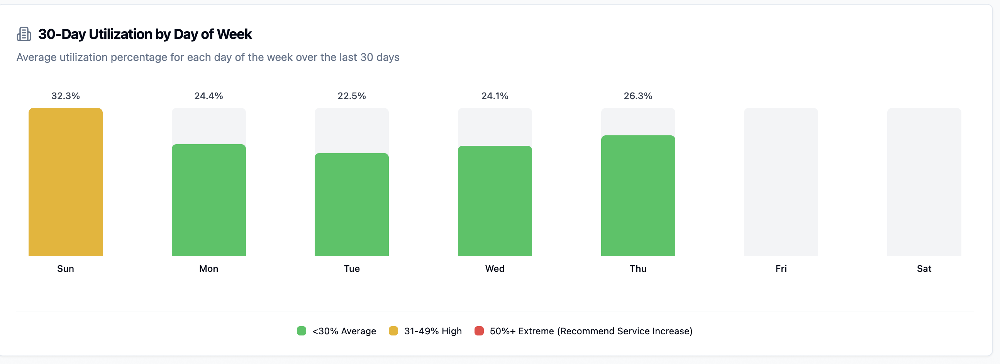
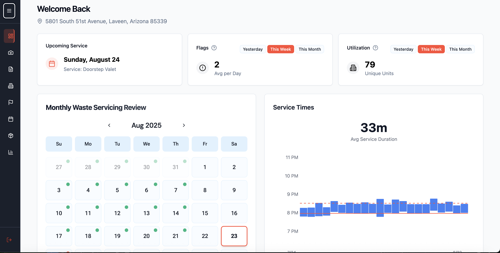

The Kaizen Platform leverages artificial intelligence to provide property managers with unprecedented visibility and control over their waste operations. From predictive analytics to automated compliance tracking, our technology ensures your waste management runs like clockwork.
Designed specifically for multi-family properties, our platform integrates seamlessly with your existing property management systems while providing the detailed insights you need to optimize costs and maintain compliance.
Live tracking of service completion, issue resolution, and performance metrics across all your properties.
Comprehensive compliance documentation and performance reports generated automatically for your records.
AI-powered insights that anticipate service needs and optimize scheduling before issues arise.
Our AI-powered verification system provides photo documentation and timestamp verification for every service completion. Property managers receive instant confirmation when services are completed, with detailed evidence for compliance records.

Machine learning algorithms analyze historical data and current patterns to predict when additional services will be needed. Receive proactive alerts for potential overflow situations, seasonal adjustments, and maintenance requirements.

Centralized command center that integrates with your existing property management software. Monitor all waste operations, track costs, view compliance status, and manage service requests from a single, intuitive interface.

Every service event is GPS-tracked and timestamped, providing irrefutable proof of service completion and timing.
Before and after photos automatically captured and stored, creating a visual record of service quality and completion.
Comprehensive service reports generated automatically, ready for compliance audits and property management records.
Continuous monitoring of municipal code compliance with alerts for any potential violations or required actions.
Direct integration with leading property management platforms including Yardi, RealPage, and AppFolio for seamless data flow and unified reporting.
Full platform functionality available on mobile devices, allowing property managers to monitor and manage waste operations from anywhere.
Configurable workflows and alert systems that adapt to your property's specific needs and management preferences.
See how the Kaizen Platform can transform your property operations